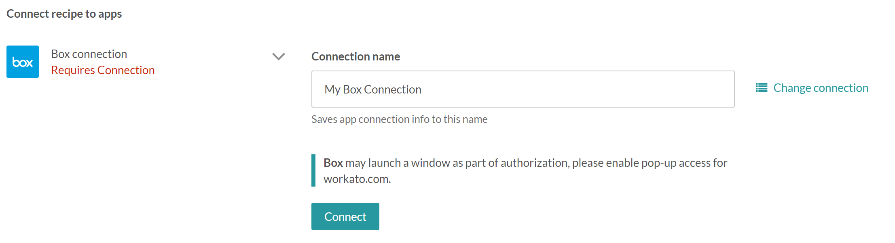
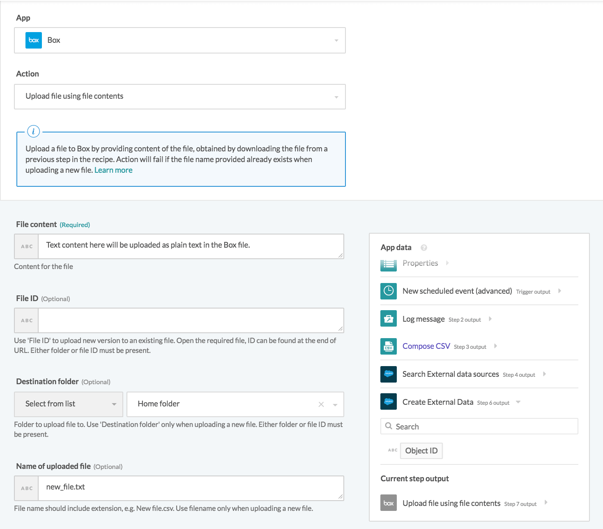
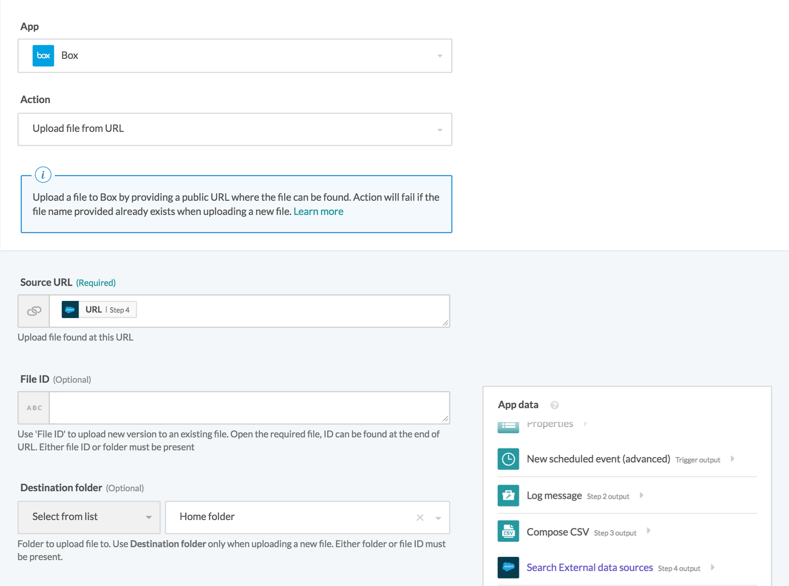
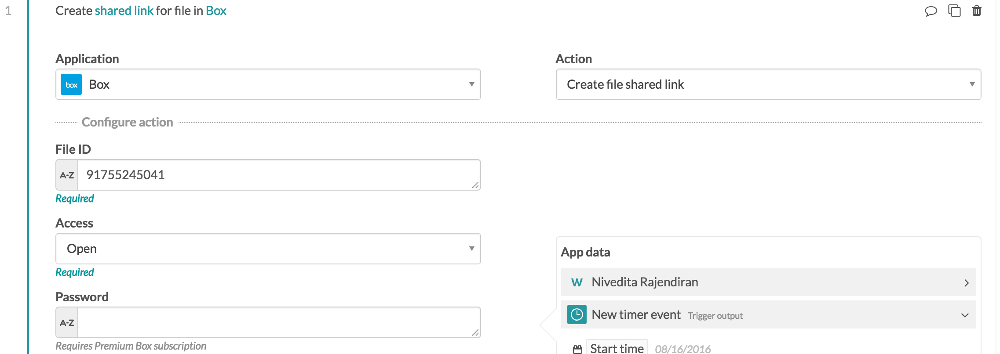

Box
Connector information
API version
The Box connector uses Box Rest API.
Supported editions and versions
The Box connector works with all Box Plans - Individual, Business, Platform.
How to connect to Box on Workato
Box connection
The Box connector uses OAuth2 authentication to authenticate with Box.

Connection name
Give this Box connection a unique name that identifies which Box instance it is connected to.
Click on connect and a Box dialog box will pop-up, requesting your Box Account credentials, and granting access to Workato.

Email
Email to connect to Box.
Password
Password to connect to Box.
SSO
Single-sign on login to Box.
Roles and permissions required to connect
Box users who can login to Box can connect to Box from Workato. The user will have the same permissions on Workato as in Box. This means that they will have the same capabilities to view, share, upload and download to those files and folders as per their respective permissions on the Box platform.
Working with the Box Connector
Working with generic triggers in Box
Working with generic create/update/search actions in Box
Working with attachments in Box
Upload file content
Plain text file content can be uploaded using this action. Enter the text for your file in the File Content field. You will also need to select the folder you want to upload to in Box and enter a name for your file (including the extension you want to give it). 
Upload file from URL
This action can be used to upload a file directly from a URL rather than through entering text content. This allows you to upload non-text files such as images. In the Source URL field, enter the URL for the file you want to upload. Attachment URLs will typically end with the file extension for the file (in the example below, .jpg). You will also need to select the folder you want to upload to. Entering a file name is optional as the name of the file will be obtained from the URL by default. 
Upload file content
These actions allow you to create a direct link to a file or folder in Box. First, you will need to enter the File ID/Folder ID for the file/folder you want to create a shared link for. Next, select an access level for the link (Open, Company, Collaborators, or Default). This will set restrictions on who can view your file/folder via the shared link. If you have a Premium Box subscription, you can also enter a password that link users will need to enter before they can access your file/folder. 
Articles on how to use additional special actions, such as get shared link, etc.
Getting Shared Link of Box Folder/File
You have to add action Create shared link for file in Box in order to make a file/folder sharable. In the example below, you can use the ID pill from the trigger step to identify the new file when creating shared URL link and post the URL in the schema(below) to your Slack Workbot.


Best practices in working with the Box connector
More Generation Information on Box
Box Role Privelleges
When using Box with Workato, you will only be able to perform the actions that are allowed by the level of access of the Box account used to make the connection on Workato. The list below showcases the available Box role privelleges.
| Levels | Access |
|---|---|
| Uploader | Can only upload content and see names of items in the folder. Cannot view or download any content. |
| Previewer | Can only preview items in the folder. Cannot upload, edit, delete, or share any content. |
| Viewer | Can preview/download content, make comments, and generate shared links. Cannot add tags, invite new collaborators, edit shared links, or upload/edit/delete items in the folder. |
| Previewer uploader | Can preview content, add comments, add tasks, and upload content to the folder. Cannot add tags, generate shared links, invite new collaborators, or edit/delete items in the folder. |
| Viewer uploader | Can preview content, download content, add comments, generate shared links, and upload content to the folder. Cannot add tags, invite new collaborators, or delete items in the folder. Can still download, edit, and re-upload files under the same name manually or using Box Edit. |
| Editor | Can view, download, upload, edit, delete, copy, move, and rename content. Can also generate/edit shared links, make comments, assign tasks, create tags, and invite/remove collaborators. Cannot delete or move root level folders. |
| Co-owner | Has all permissions of an editor. Can also manage users in the folder: add new collaborators, change access levels of collaborators, remove collaborators. |
| Owner | Full access. |
Shared Link Permissions
When creating a shared link for a file or folder in Box, you can choose from four different options for access levels:
| Levels | Access |
|---|---|
| Open | Anyone with the link can access the file or folder. A Box account is not required. |
| Company | Only Box users with a validated email address matching your company's domain can access the file or folder via the shared link. |
| Collaborators | Only Box users invited to the folder or file (collaborators) can access the file or folder via the shared link. |
| Default | This option follows whatever the default setting for your account is. You can view and change this in your Box account settings under Content and Sharing. |